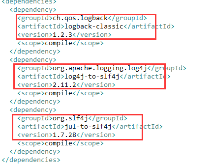
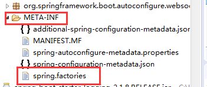

原文连接:https://www.cnblogs.com/lixinjie/p/playing-springboot-003.html
上一篇文章中提到的条件注解，只是自动配置整体解决方案中的一个环节而已，可以说是管中窥豹。
本文就逐步擦除迷雾，让整体浮现出来，这样就会有一个宏观的认识。
除了写代码之外，还能干点什么？
提到“配置”这个词，我们不一定知道它是什么，但绝对知道它不是什么，显然，不是写代码。
那对于用户（使用SpringBoot框架的人）来说，除了写代码，还能干点什么呢？这非常重要。
因为自动配置的整体方案最后必须落到“写代码之外”的范围来实现，这才叫配置，否则只能叫“编码实现”了。
我认为以下这些内容，都不叫写代码：
1）在application.yml配置文件里倒腾。
2）在源码的某些地方加上适合的注解。
3）在pom.xml里使用maven引入适合依赖。
4）设置命令行参数，系统环境变量，JVM属性等。
常用的基本上也就这些了。也就是说，自动配置的实现是逃不出这个圈儿的。
其实，配置文件和注解上一篇已说过，已经用到自动配置当中了。
那下一个会是谁呢？
来吧，大家一起来思考设计方案
曾经有一句话，不想当将军的士兵，不是好士兵。
现在有一句话，不想当架构师的码农，不是好程序员。
我想说的是，如果你水平很高，做开发一样很爽，如果水平很差，做了架构师一样苦逼。
如果拥有了翱翔的翅膀，强大的心脏，聪明的头脑，灵活的思维，开阔的视野，其实很多事情都会发生变化。
好了，那些想成为架构师的，请你来设计一个方案吧。
其实，方案根本就不是设计出来的，而是选择出来的。
方案最终的好与坏并不那么重要，只要能满足要求，能让大多数人接受，就可以了。
选择依赖于判断，判断取决于分析，分析的目的就是要搞清事实现状。
现状就是，程序员喜欢写代码，不喜欢写文档和注释。更不喜欢去设置命令行参数和环境变量等。
因为设置参数，通常意味着进行项目部署或组件调优，这大部分人都不喜欢，自然也不会在行。
假如要把方案落地到设置参数上来，我认为是一种不好的选择。因为很难流行开来。
好吧，现在已经没得选择了，只剩下maven依赖了。因为程序员必须要会引入依赖，不然没法写代码。
SpringBoot提供的解决方案
首先要说明一个问题，有些人认为我们自己手动配置和SpringBoot提供的自动配置是不一样的。
其实不是这样的，在Spring里面所有的配置其实都是bean的注册和设置一些必要的参数。
比如我们手动配置redis，自然需要注册几个bean，再配置下IP、端口、密码等。
SpringBoot的自动配置里面也是包含这样的代码的，都在源码里呢，可以自己去看看。
这一点搞清楚后，接下来的就好理解了。
对于我们来说，想使用redis时，就手动注册bean，不使用时就不注册，这完全OK，没有问题。
但对SpringBoot来说，这些注册bean的代码必须写好放到那里，因为它也不知道用户到底用不用redis。
这同时也说明了，这些注册bean的代码默认是不会执行的，需要有一个类似“开关”的东西，在用户使用时来开启（或激活）一下。
因此，包含两个东西，一个是自动配置的代码，一个是启用这些代码的“激活器”。
这两个东西在SpringBoot里面是有名字的：
1）包含自动配置代码的叫做autoconfigure模块。
2）被称为“激活器”的叫做starter模块。
通常，这两个模块会被打成两个jar包。当然，也可以合成一个jar包，没有影响。
如果足够细心的话，会发现starter模块对应的jar包，通常是空的，即里面没有一个class（字节码）文件。
如下图01：
对于这个问题，需要解释一下。我们刚刚之所以把starter模块称为“激活器”，只是为了方便理解而已。
其实它就是个普通的jar包，它存在的目的就是为了将autoconfigure模块对应的jar包引入，和所有其它依赖引入。
说白了，空jar包里包含maven的pom文件，可以用来引入依赖。如下图0203：

这是一个日志的starter对应的jar包的pom文件。其实就是引入了日志相关jar包。
对内置的和第三方接入的采用统一风格
SpringBoot肯定会内置一些自动配置（也可以认为是官方支持的），对于这些内置的，在实现时其实会容易一些，因为毕竟都在源码里。
但是，也会有很多第三方的组件和SpringBoot集成，所以也需要自动配置，那怎样做才能又简单又好呢？来分析下吧。
自动配置其实就是注册一些bean，这些注册bean的代码肯定是放到一个类中（或者几个类中），此时肯定会有一个类起到“入口”的作用。
但是这个入口类该怎么去定位呢？都使用特定的类名吗？好像实践性不太好，因为每个人都应该有自己选择类名的权利啊。
其实有个很好的示例可供我们参考，它就是main方法，main方法就是一个程序的执行入口，而且main方法所在的类名也是没有限制的。
当我们打成一个jar包时，直接使用java -jar命令来执行，请问它是如何找到main方法了呢？逐个遍历显然是不可能的。
只要打开jar包看一下就明白了。如下图0405：
在jar包的META-INF/MANIFEST.MF文件里，指定了main方法所在的类。
进到这个类里看看，确实有main方法，如下图06：
其实这个jar包就是SpringBoot打成的可执行jar包。
这种方式是Java规定的，在一个固定的文件中指定好Main-Class。这其实是依赖转移。
把对main方法所在类名的依赖，转移为对MANIFEST.MF这个文件的依赖。
SpringBoot在解决自动配置类“入口”的问题时，就是采用这种方式的。
把对类名称的依赖转移为对固定文件名称的依赖，在文件中再去指定类名。
如下图07：

在SpringBoot的jar包里，META-INF目录下有个spring.factories文件。
这个文件名称必须叫这个，打开它，如下图08：
可以看到这是一个属性（properties）文件格式的，里面有一个key的名称是：
org.springframework.boot.autoconfigure.EnableAutoConfiguration
这其实就是一个启用自动配置的注解。
这个key的值是很多的类，这些类的名称（通常）都以AutoConfiguration结尾，表示自动配置的“入口”类。
SpringBoot当然会专门来加载这些入口类啦，如下图0910：
这样第三方的jar包，只需要放置spring.factories这个文件，并也使用这个key名称，把值变成自己的自动配置入口类即可。
当jar包出现在类路径中时，SpringBoot会扫描所有jar包里的spring.factories这个文件，就可以被处理了。
相当于一种自动识别，这样就统一了SpringBoot的内置自动配置和第三方提供的自动配置。
自动配置的顺序问题
上一篇文章介绍的注解基本都是对某种事物的检测，看它是否存在或满足特定条件。
以此来决定是否要进行自动配置。其实除了这之外，还有一个顺序的问题。
就是有些需要先配置，然后才能配置其它的。这也可以通过注解来实现。
@AutoConfigureAfter注解指定应该在某个自动配置完成后再进行自己的。
@AutoConfigureBefore注解就正好和上面这个相反。
自动配置的内容还是非常多的，如果全部在源码中指定，可能会比较的乱。
所以SpringBoot就把一些内容给转移了出来，放到jar包里的一个properties文件中。
如下图11：
这个文件中的内容很多。
>>> 玩转SpringBoot系列文章 <<<
【玩转SpringBoot】用好条件相关注解，开启自动配置之门
>>> 品Spring系列文章 <<<
品Spring：SpringBoot和Spring到底有没有本质的不同？
品Spring：SpringBoot轻松取胜bean定义注册的“第一阶段”
品Spring：SpringBoot发起bean定义注册的“二次攻坚战”
品Spring：注解之王@Configuration和它的一众“小弟们”
品Spring：对@PostConstruct和@PreDestroy注解的处理方法
品Spring：对@Autowired和@Value注解的处理方法
品Spring：真没想到，三十步才能完成一个bean实例的创建
品Spring：关于@Scheduled定时任务的思考与探索，结果尴尬了
>>> 热门文章集锦 <<<
爸爸又给Spring MVC生了个弟弟叫Spring WebFlux
【面试】吃透了这些Redis知识点，面试官一定觉得你很NB（干货 | 建议珍藏）
【面试】如果你这样回答“什么是线程安全”，面试官都会对你刮目相看（建议珍藏）
【面试】迄今为止把同步/异步/阻塞/非阻塞/BIO/NIO/AIO讲的这么清楚的好文章（快快珍藏）
【面试】一篇文章帮你彻底搞清楚“I/O多路复用”和“异步I/O”的前世今生（深度好文，建议珍藏）
作者是工作超过10年的码农，现在任架构师。喜欢研究技术，崇尚简单快乐。追求以通俗易懂的语言解说技术，希望所有的读者都能看懂并记住。下面是公众号的二维码，欢迎关注！